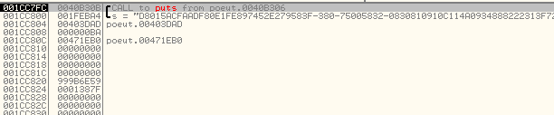
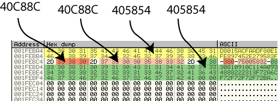
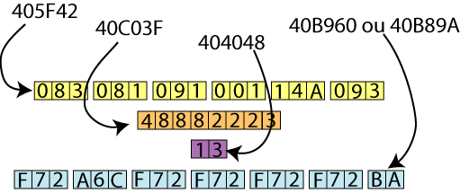

Date de publication : vendredi 26 mai 2006
Auteur : BeatriX
2. Technique d'attaque : le 'Back-Stepping'.
Pour attaquer du junkcode, le reverser utilise en général un désassembleur et code des scripts afin de supprimer ou de masquer le code inutile. Dans le cas présent, cette technique est très utile pour éliminer les lignes en trop mais maheureusement, elle ne permet pas de reconstruire le code pour éliminer les permutations.
On peut bien évidemment utiliser la bonne vieille méthode qui utilise le tracing exhaustif du code en entrant dans toutes les routines et en analysant toutes les lignes de code rencontrées. En général, pour appliquer ce genre de méthode, on utilise sous OllyDebugger la technique surpuissante suivante :
Pour l'avoir expérimenté sur plus de 300 000 000 instructions, je peux vous dire que c'est efficace mais...un peu long :)
Une autre technique, plus lourde,consiste à désassembler le code et à le réassembler dans l'ordre d'origine en prenant soin de supprimer le code inutile. il faut pour cela disposer d'un outil de désassemblage personnalisable. On peut coder un outil semblable en utilisant par exemple le LDE de Zombie en guise de moteur de désassemblage.
Il existe une autre technique qui ne nécessite aucune intervention sur le code du binaire. Elle est encore plus lourde à mettre en oeuvre que la précédente technique puisqu'elle nécessite un émulateur x86 personnalisable. cet émulateur x86 est, comme son nom l'indique, capable d'émuler la majorité des opcodes x86 mais également capable de reproduire l'environnement Windows nécessaire au lancement et à la gestion d'un processus.
L'émulateur en tant que tel n'est pas intéressant ici s'il n'est pas équipé d'une option que j'ai baptisé "BACK-STEPPING". Cette option merveilleuse permet, à tout moment, d'exécuter le binaire à l'envers ! Vous imaginez déjà la portée d'un tel outil.
Je vais donc montrer ici, moyennant l'usage d'un émulateur équipé d'un module de back-stepping, qu'on peut s'affranchir de toucher le code et que l'on peut très facilement reconstruire l'algorithme de génération du serial.
2.1. Utilisation du Back-Stepping.
Le back-stepping est un outil qui permet à tout moment de remonter le flux d'exécution d'un programme. Concrètement, il permet d'exécuter un programme à l'envers à partir d'un BP posé à un endroit stratégique. Cet endroit stratégique peut être une comparaison de registres (genre cmp eax, 1 dans les cas classiques de vérification de serial), ou une ligne chargée de stocker une information calculée précédemment par un algorithme obfusqué.
Dans le cas présent, si nous parvenons à localiser la zone de stockage du serial en mémoire et à trouver la ou les lignes de code qui réalisent ce stockage (en général, un simple mov [stockage], registre), nous pouvons alors breaker sur ces lignes et remonter dans le code afin de déterminer la provenance de la valeur stockée. Autrement dit, si nous repérons que le serial est stocké en mémoire de la façon suivante :
mov byte ptr [ebx], al
Il nous suffit alors de back-stepper à partir de ce mov et de scruter le registre EAX. Nous pouvons alors déterminer d'où vient la valeur de al. Si elle provient d'un autre registre, nous pistons alors ce dernier. Si elle provient d'un espace mémoire, nous localisons (à l'aide d'un debugger) la ligne qui modifie cet espace et nous recommençons le back-stepping à partir de cette dernière.
Même si l'auteur du binaire a essayé de brouiller les pistes, en scrutant les valeurs des registres durant le back-stepping, nous ne pouvons pas faire autrement que de découvrir l'algorithme tout entier en nous affranchissant du junkcode inutile.
2.3. Attaque de poeut.exe par back-stepping.
Si nous lançons le binaire sous OllyDebugger en breakant sur la fonction puts, nous pouvons localiser la zone de stockage du serial comme le montre l'illustration suivante :

Nous pouvons désormais chercher les lignes de code qui se chargent de remplir l'espace mémoire localisé qui démarre pour ma part en 1FEBA4h. Pour cela, il suffit d'y poser un BPM et de lancer le binaire. Les coupables sont vite démasqués :
405854 mov byte ptr ds:[esi], al 40C88C mov byte ptr ds:[esi], al

Nous disposons donc de nos points de départ pour le back-stepping. Le serial se compose de 4 parties, la partie 1 (jaune) et la partie 4 (en vert) sont remplies par la ligne 405854h et les deux autres parties (en orange et rose) sont remplies par la ligne 40C88Ch.
2.3.1. Partie 1 du SERIAL :
Nous allons donc commencer par back-stepper à partir de l'adresse qui se charge de remplir la première partie du serial : 405854h. Nous chargeons donc le binaire dans l'émulateur, nous posons un BP en 405854h et nous démarrons notre back-stepping :
00405854 mov byte ptr [esi], al ; nous allons surveiller eax 0040BEA7 movsx eax, byte ptr [ebx] ; voici la première ligne rencontrée qui modifie eax
nous devons donc savoir d'où provient le byte situé en ebx. Avant cela, faisons un petit bilan de notre back-stepping. Sans back-stepping, si nous regardons le code situé entre 40BEA7 et 405854, nous obtenons ceci:
0040BEA7 movsx eax, byte ptr [ebx] 0040BEAA call 40583C 0040583C cmp ecx,esi 0040583E push edx 0040583F push ebx 00405840 test edi,63878 00405846 add dword ptr ss:[esp+8],2 0040584B add esp,8 0040584E test esi,218 00405854 mov byte ptr ds:[esi],al
Sans même le savoir, nous avons évité 8 lignes de junkcode. Nous n'avons pas eu à analyser ce junk, le back-stepping nous pemettant de ne travailler que sur les valeurs de registres vraiment utiles.
Le byte récupéré en 40BEA7 et affecté à l'adresse pointée par ebx en 00409413h. Nous back-steppons à partir de là :
00409413 mov byte ptr [ebx], cl ; nous allons pister ecx à partir d'ici 004076D5 movzx ecx, byte ptr [ecx+eax] ; eax pointe sur la chaine "0123456789ABCDEF 00407A9D sub ecx, eax ; pistons ecx et eax 00402096 shl eax, 4 00407FCA mov eax, edx ; pistons edx et ecx 00404292 shr edx, 4 00407F52 mov edx, ecx 0040B0EA mov ecx, dword ptr [ebx]
En quelques secondes, nous avons donc déterminé que la valeur stockée par 00405854h provient de la ligne 0040B0EAh. Voici donc un listing complet du code situé entre 40B0EA et 405854 pour voir le travail du back-stepping (les lignes en gras sont celles obtenues par back-stepping, les autres sont du junk ou du code secondaire) :
Log data
mov ecx,dword ptr ds:[ebx]
lea ebx,dword ptr ss:[ebp-38]
retn
push edx
push eax
jmp short poeut.0040208E
call poeut.00406CA0
call poeut.00407EA4
push edi
prefix rep:
jmp short poeut.00407F51
push esp
mov edx,ecx
test esp,ecx
test eax,851F98D0
add dword ptr ss:[esp+8],9
prefix rep:
dec edi
add esp,8
prefix repne:
jmp poeut.00404292
shr edx,4
prefix rep:
jmp short poeut.004042BF
jmp poeut.00407FC7
jmp short poeut.00407FCA
mov eax,edx
prefix repne:
jmp poeut.00407FF2
retn
retn 8
jmp short poeut.00402096
shl eax,4
prefix rep:
jmp poeut.00407A9D
sub ecx,eax
push ebp
push poeut.00407B3B
retn
push esi
prefix rep:
push eax
call poeut.0040D650
call poeut.00404B5B
test ebp,179
push poeut.00404B75
retn
jge poeut.004076CB
push eax
jbe poeut.004040B8
mov eax,dword ptr ss:[ebp-44]
movzx ecx,byte ptr ds:[ecx+eax]
prefix repne:
ja poeut.00409413
mov byte ptr ds:[ebx],cl
add dword ptr ss:[esp+4],4
add esp,4
inc ebx
mov ecx,edx
retn
test edx,edx
retn 0C
jnz short poeut.00402089
push edx
push eax
jmp short poeut.0040208E
call poeut.00406CA0
call poeut.00407EA4
push edi
prefix rep:
jmp short poeut.00407F51
push esp
mov edx,ecx
test esp,ecx
test eax,851F98D0
add dword ptr ss:[esp+8],9
prefix rep:
dec edi
add esp,8
prefix repne:
jmp poeut.00404292
shr edx,4
prefix rep:
jmp short poeut.004042BF
jmp poeut.00407FC7
jmp short poeut.00407FCA
mov eax,edx
prefix repne:
jmp poeut.00407FF2
retn
retn 8
jmp short poeut.00402096
shl eax,4
prefix rep:
prefix rep:
sub ecx,eax
push ebp
push poeut.00407B3B
retn
push esi
prefix rep:
push eax
call poeut.0040D650
call poeut.00404B5B
test ebp,179
push poeut.00404B75
retn
jge poeut.004076CB
push eax
jbe poeut.004040B8
mov eax,dword ptr ss:[ebp-44]
movzx ecx,byte ptr ds:[ecx+eax]
prefix repne:
ja poeut.00409413
mov byte ptr ds:[ebx],cl
add dword ptr ss:[esp+4],4
add esp,4
inc ebx
mov ecx,edx
retn
test edx,edx
retn 0C
jnz short poeut.00402089
mov ecx,edi
jmp short poeut.004020B3
push poeut.004020EF
jmp short poeut.004020BB
retn
jb poeut.0040B978
dec edi
test ecx,ecx
push poeut.0040214A
jmp short poeut.00402100
retn
jle short poeut.0040215C
dec ebx
prefix rep:
lea edi,dword ptr ss:[ebp-38]
prefix repne:
push esi
push edi
push ebx
prefix repne:
call poeut.0040BEA7
movsx eax,byte ptr ds:[ebx]
call poeut.0040583C
cmp ecx,esi
push edx
push ebx
test edi,63878
add dword ptr ss:[esp+8],2
add esp,8
test esi,218
mov byte ptr [esi], al
En continuant l'analyse à partir de 40B0EAh, on constate que la partie 1 du serial provient d'une valeur stockée sur 32 bytes...avec un minimum d'intuition et un outil du style CrypTool, on constate que cette valeur est un hash MD5 standard calculé sur l'argument. Ceci signifie que la routine que nous venons de back-stepper n'est en réalité rien d'autre qu'une routine qui convertit des bytes en chaine de caractères. Le hash est donc calculé sur une chaine de 20 caractères. Inutile de vouloir attaquer en force une telle longueur (déjà, à partir de 8 caractères, ça commence à devenir coton). Nous allons donc observer par back-stepping les calculs des parties 2, 3 et 4.
2.3.2. Partie 2 du SERIAL :
Cette petite partie composée de 3 bytes est remplie par 40C88Ch. En 5 minutes, on remonte tout le code responsable du calcul des 3 valeurs 33h, 38h et 30h. On constate que 40C88C récupère ses informations à partir d'une zone mémoire remplie par 40DE4F
0040DF7D mov dword ptr [esp+8], edi (edi = "B"+"e"+"a"+"t") 004022F1 mov eax, dword ptr [edx] (eax <- edi) 00402301 mov ecx, eax 00402331 mov eax, 0CCCCCCCDh 0040BD63 mul ecx 0040BD65 shr edx, 3 0040BD68 lea eax, dword ptr [edx+edx*4] 004056A8 add eax, eax 00402347 sub cl, al 00402349 mov al, cl 0040234B add al, 30h 0040201B mov ecx, edx 0040DE4F mov byte ptr [ebx], al (al=30h) 00402331 mov eax, 0CCCCCCCDh 0040BD63 mul ecx 0040BD65 shr edx, 3 0040BD68 lea eax, dword ptr [edx+edx*4] 004056A8 add eax, eax 00402347 sub cl, al 00402349 mov al, cl 0040234B add al, 30h 0040201B mov ecx, edx 0040DE4F mov byte ptr [ebx], al (al=38h) 00402331 mov eax, 0CCCCCCCDh 0040BD63 mul ecx 0040BD65 shr edx, 3 0040BD68 lea eax, dword ptr [edx+edx*4] 004056A8 add eax, eax 00402347 sub cl, al 00402349 mov al, cl 0040234B add al, 30h 0040201B mov ecx, edx 0040DE4F mov byte ptr [ebx], al (al=33h)
Un petit calcul en boucle sans grand intérêt est donc effectué à partir de la somme des valeurs ascii des 4 premiers caractères de l'argument
2.3.3. Partie 3 du SERIAL :
Exactement de la même façon, on peut récupérer la routine qui reconstruit la partie 3 du serial.
00404EBF mov dword ptr [esp+8], ecx (ecx = "B"*"e"*"a"*"t") 004022F1 mov eax, dword ptr [edx] (eax <- ecx) 00402301 mov ecx, eax 00402331 mov eax, 0CCCCCCCDh 0040BD63 mul ecx 0040BD65 shr edx, 3 0040BD68 lea eax, dword ptr [edx+edx*4] 004056A8 add eax, eax 00402347 sub cl, al 00402349 mov al, cl 0040234B add al, 30h 0040201B mov ecx, edx 0040DE4F mov byte ptr [ebx], al (al=32h) 00402331 mov eax, 0CCCCCCCDh 0040BD63 mul ecx 0040BD65 shr edx, 3 0040BD68 lea eax, dword ptr [edx+edx*4] 004056A8 add eax, eax 00402347 sub cl, al 00402349 mov al, cl 0040234B add al, 30h 0040201B mov ecx, edx 0040DE4F mov byte ptr [ebx], al (al=33h) 00402331 mov eax, 0CCCCCCCDh 0040BD63 mul ecx 0040BD65 shr edx, 3 0040BD68 lea eax, dword ptr [edx+edx*4] 004056A8 add eax, eax 00402347 sub cl, al 00402349 mov al, cl 0040234B add al, 30h 0040201B mov ecx, edx 0040DE4F mov byte ptr [ebx], al (al=38h) ...
la première ligne (404EBF) stocke le produit des valeurs ascii des 4 premiers caractères de l'argument. On peut le savoir en back-steppant à partir de cette adresse. En remonte alors jusqu'en 404CF7h.
2.3.4. Partie 4 du SERIAL :
La dernière partie du serial composée de 48 bytes est remplie à l'aide de la ligne 405854h. Nous avon vu précédemment que cette ligne fait partie d'une routine qui débute en 40B0EAh et qui ne fait que convertir des bytes en chaines de caractères. Ces bytes sont générés par des routines variées et sont tous stockés les uns après les autres dans une même zone tampon. (celle pointée en 40B0EAh) Après quelques Memory Break points, on peut retrouver la fin des routines qui se chargent de remplir la zone tampon :

Les 18 premiers bytes proviennent de la routine qui se termine en 405F42. Les 8 bytes suivants proviennent de la routine qui se termine en 40C03F. Les deux bytes suivants proviennent de la ligne 404048 et les bytes suivants proviennent de la routine qui se termine par 40B960 et 40B89A. Nous devons donc back-stepper à partir de ces 5 adresses pour découvrir les routines.
Portion jaune
La première routine commence en 40C9FD :
0040C9FD movzx eax, dword ptr [ebp-2A44h] ---> "riX200..." 0040CB24 shr al, 5 00405D17 movzx edx, dword ptr [edi+ebp-2A44h] 00405E8C lea ecx, dword ptr [edx*8] 00405E93 and ecx, 0F8h 00405236 or ecx, eax 00405F42 mov dword ptr [esp+8], ecx [...] 0040620E movzx eax, dword ptr [edi+ebp-2A44h] ---> "riX200..." 0040CB24 shr al, 5 00405D17 movzx edx, dword ptr [edi+ebp-2A44h] 00405E8C lea ecx, dword ptr [edx*8] 00405E93 and ecx, 0F8h 00405236 or ecx, eax 00405F42 mov dword ptr [esp+8], ecx [...]
Les 18 premiers bytes sont donc issus des 5ème, 6ème, 7ème, 8ème, 9ème et 10ème caractères de l'argument et sont générés par une boucle qui comporte de simples opérations arithmétiques.
Portion orange
La seconde routine permet de générer les 8 bytes et commence en 00406CB7h :
00406CB7 mov ebx, dword ptr [ebp+FFF9C8D4h] 0040CCB0 movzx edx, byte ptr [ebx] --->"420061..." 004073DE xor edx, edi 004074E0 movzx ecx, dl 0040751C mov edx, dword ptr [ecx*4+410000] 00407C93 shr edi, 8 004073A3 xor edi, edx 0040CCB0 movzx edx, byte ptr [ebx] --->"420061..." 004073DE xor edx, edi 004074E0 movzx ecx, dl 0040751C mov edx, dword ptr [ecx*4+410000] 00407C93 shr edi, 8 004073A3 xor edi, edx [...] 0040C03F mov dword ptr [esp+8], edi
Les 8 bytes concernés sont donc issus des 11ème, 12ème, 13ème, 14ème, 15ème et 16ème caractères de l'argument. Nous remarquons en plus que la routine utilise une table hardcodée commençant en 410000h. Pour réaliser le bruteforce, il faudra prendre soin de ripper cette table.
Portion mauve
La troisième portion (2 bytes) est toujours égales à 13h et est remplie par la ligne 404048h :
00404048 mov dword ptr [esp+8], 13h
Portion bleue
La quatrième portion commence en 004028A4.
004028A4 movzx edx, dword ptr [eax+ebp+FFFDEAC4h] ---> "2345..." 004028AF mov al, dl 00402963 shr al, 4 00402997 mov ecx, dword ptr [eax*4 + 403D40h] 0040299E and ecx, 0FFFh 0040B960 mov dword ptr [esp+8], ecx 0040BA8A movzx edx, dword ptr [ecx+ebp+FFFDEAC4h] ---> "2345..." 0040CD4B mov eax, edx 0040CD6F and eax, 0Fh 0040CD72 mov ecx, dword ptr [eax*4 + 403D40h] 0040CD82 and ecx, 0FFFh 0040B89A mov dword ptr [esp+8], ecx [...]
Cette portion est donc issue des 4 derniers caractères de l'argument. Il faut néanmoins disposer d'une table hardcodée qui débute en 403D40.
Nous disposons désormais de tous les éléments pour retrouver l'argument demandé. Je finirai par une remarque sur les lignes de code récupérées par back-stepping. Sur de nombreuses routines, on peut clairement voir des boucles qui sont donc munies de compteurs. Nous ne récupérons pas directement ces compteurs ni leur incrémentation mais ceci ne gène en rien la compréhension des algorithmes.
Copyright (C)- FRET (2006)